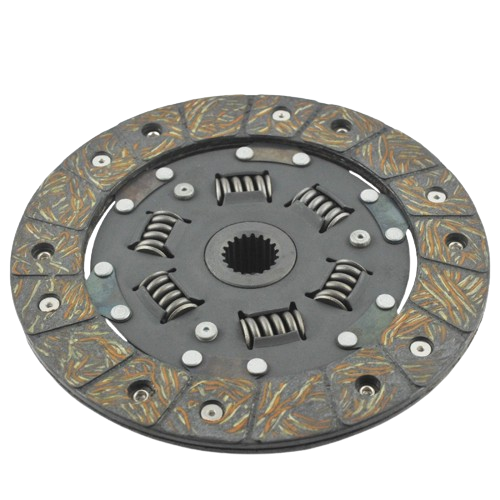
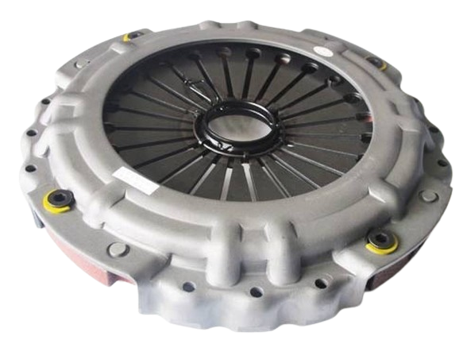
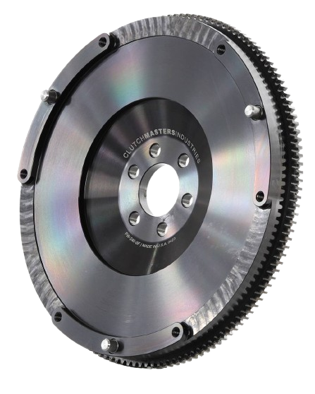
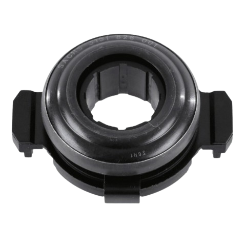
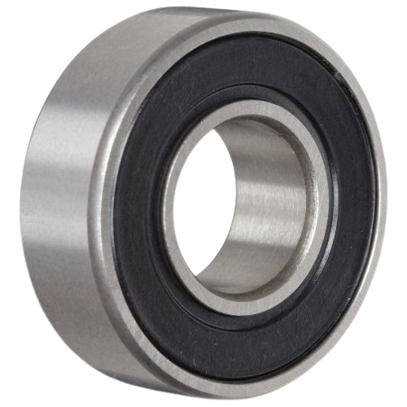

A car clutch is essentially a mechanical device that connects and disconnects the engine's power from the transmission, allowing you to change gears smoothly. It's an essential component of manual transmissions, serving as the intermediary between the engine and the wheels.
The car clutch is a crucial component of manual transmission vehicles. It's responsible for connecting and disconnecting the engine from the gearbox, allowing the driver to change gears and control the power transfer from the engine to the wheels.
HERE'S HOW IT WORKS:
* Clutch Pedal:
When the driver presses the clutch pedal, it disengages the clutch, separating the engine from the gearbox.

* Clutch Disc: Inside the clutch housing, there's a friction disc called the clutch disc. It's connected to the transmission input shaft. 
* Pressure Plate: The pressure plate applies pressure to the clutch disc against the flywheel. When the clutch pedal is released, the pressure plate pushes the clutch disc against the flywheel, connecting the engine to the gearbox. 
* Flywheel: The flywheel is connected to the engine's crankshaft. It provides a smooth surface for the clutch disc to engage with when the clutch is engaged. 
* Release Bearing: Also known as the throw-out bearing, this component applies force to the pressure plate when the clutch pedal is pressed, releasing the pressure on the clutch disc and allowing it to disengage from the flywheel. 
* Pilot Bearing or Bushing: In some cars, there's a pilot bearing or bushing installed in the center of the flywheel. It supports the input shaft of the transmission, ensuring smooth rotation. 
Proper clutch operation requires coordination between the driver's foot on the clutch pedal and the engine's speed. When the clutch pedal is pressed, the engine can rev freely without affecting the speed of the wheels. When the clutch pedal is released, the engine power is transferred to the wheels, propelling the vehicle forward.
Over time, the clutch disc can wear out due to friction, requiring replacement. Additionally, other components like the pressure plate, release bearing, and pilot bearing may also need maintenance or replacement depending on usage and wear.
Understanding your car's clutch system is essential for smooth driving, especially if you're driving a manual transmission vehicle. Here are some key things to know about car clutches:
1. *Manual vs. Automatic*: Manual transmission cars have a clutch pedal, while automatic transmission cars do not. In manual cars, the driver is responsible for engaging and disengaging the clutch to change gears, while automatic transmissions handle gear changes automatically
2. *Clutch Engagement Point*: Each car's clutch pedal has an engagement point where the clutch starts to connect the engine to the transmission. Finding this point smoothly is crucial for smooth shifting and avoiding unnecessary wear on the clutch
3. *Clutch Wear*: The clutch is a wear-and-tear item and will eventually require replacement, especially if not used correctly. Aggressive driving, frequent stop-and-go traffic, or resting your foot on the clutch pedal can accelerate wear.
4. *Clutch Slippage*: If you notice the engine revving but the car isn't accelerating as expected, it could indicate clutch slippage. This means the clutch isn't fully engaging, and it may need adjustment or replacement.
5. *Clutch Drag*: Clutch drag occurs when the clutch doesn't fully disengage when the pedal is pressed, leading to difficulty shifting gears or grinding noises. This can be caused by hydraulic issues, air in the clutch system, or mechanical problems.
6. *Proper Technique*: Using the clutch properly is essential for its longevity. Avoid riding the clutch (resting your foot on the pedal while driving), and shift gears smoothly without excessive force on the shifter.
7. *Clutch Hydraulics*: Many modern cars use hydraulic systems to operate the clutch. Regular maintenance of the clutch hydraulic fluid and checking for leaks is important to ensure proper clutch operation.
8. *Hill Starts*: Learning how to perform hill starts without rolling backward or stalling the engine is a fundamental skill for manual transmission drivers. It involves using the clutch and throttle in coordination.
9. *Clutch Replacement*: When it's time to replace the clutch, it's often recommended to replace the entire clutch assembly, including the pressure plate, clutch disc, release bearing, and pilot bearing or bushing.
10. *Practice*: If you're new to driving a manual transmission car, practice in a safe, low-traffic area to get comfortable with clutch operation, shifting gears, and other aspects of manual driving.
Understanding these aspects of your car's clutch system will help you maintain it properly and drive smoothly for years to come.
IMPORTANT INFO ABOUT CAR CLUTCH
Here are some important pieces of information about car clutches:
1. Function: The clutch in a manual transmission car serves to engage and disengage the engine from the transmission, allowing for gear changes and enabling the vehicle to come to a stop without stalling.
2. Components: The primary components of a car clutch include the clutch pedal, clutch disc, pressure plate, flywheel, release bearing (throw-out bearing), and sometimes a pilot bearing or bushing.
3. Wear and Tear: The clutch is a wear item and will degrade over time, especially with heavy use or improper driving techniques. Components like the clutch disc, pressure plate, and release bearing may require replacement due to wear.
4. Signs of Wear: Symptoms of a worn clutch include slipping (engine revving without a corresponding increase in vehicle speed), difficulty shifting gears, clutch drag (transmission remains engaged even with the pedal depressed), and unusual noises during clutch engagement.
5.Proper Use: Proper clutch usage involves fully depressing the clutch pedal when shifting gears, avoiding excessive slipping of the clutch, and not resting your foot on the pedal while driving, as this can cause premature wear.
6. Maintenance: Regular maintenance of the clutch system, including checking clutch fluid levels (if hydraulic) and inspecting for leaks, is important for ensuring proper operation and longevity.
7. Driving Techniques: Learning proper clutch control, including smooth engagement and disengagement, is crucial for prolonging the life of the clutch and ensuring smooth driving experiences.
8. Clutch Replacement: When it's time to replace the clutch, it's often recommended to replace the entire clutch assembly, including the clutch disc, pressure plate, release bearing, and any other associated components, to ensure proper function and longevity.
9. Cost: Clutch replacement can be a significant expense due to the labor involved, so it's essential to address clutch issues promptly to prevent further damage and potentially more costly repairs.
10. Professional Service: While some clutch maintenance tasks can be performed by DIY enthusiasts, clutch replacement and complex repairs are best left to trained professionals to ensure proper installation and function.
Understanding these key points about car clutches will help drivers recognize potential issues, maintain their vehicles properly, and make informed decisions regarding repairs and replacements.